其他
Paper朱 p06 VRoid 模型细节整理
这一集约 5 分 20 秒，没有章节。窗口是 VRoid Studio 1.5.0 - Xiduochuan.vroid*，界面是英文。视口背后仍贴着同一张校服参考。身体滑杆只记下这一屏能读清的；后面表情和贴图里，读数跟着那一帧，没在画面上的步骤标成口播。
身体收尾，再回到脸
整体还停在 Body
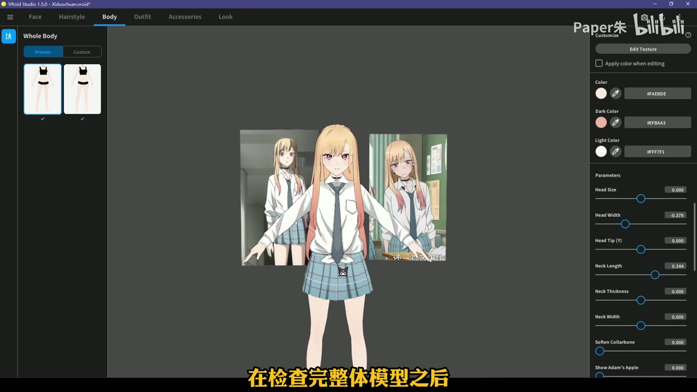
顶栏停在 Body。左侧两张身体预设都勾着，角色身上已经是白衬衫、领带和格子裙。Apply color when editing 没勾。Color、Dark Color、Light Color 是三颗肤色色块。Color #FAEBDE、Dark Color #EFBAA3、Light Color #FFF7F1。Parameters 里 Head Size、Head Tip (Y)、Neck Thickness、Neck Width、Soften Collarbone、Show Adam's Apple 都是 0.000；Head Width 是 -0.379；Neck Length 是 0.344。这一屏没有再拖新的滑杆。口播说检查完还会再微调一次，下一句就说整体身体微调完毕。
表情编辑在脸部工具栏最后
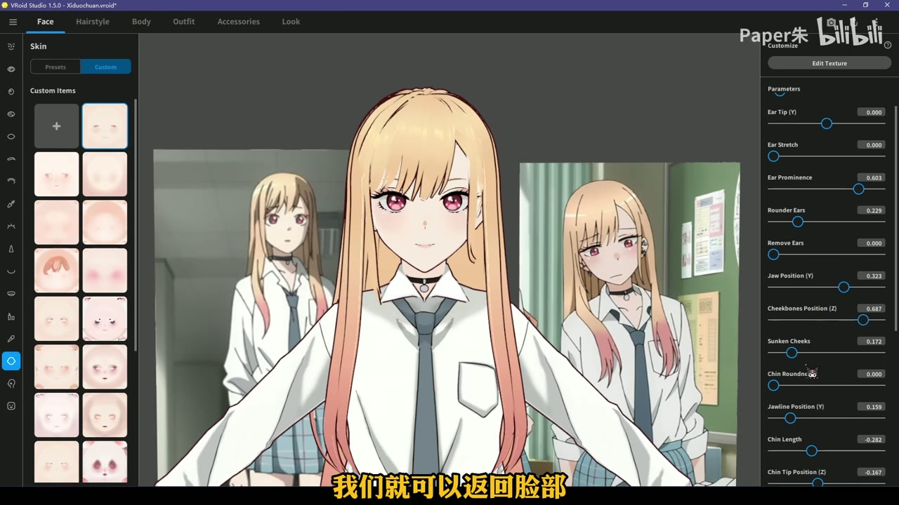
点回 Face，先落在 Skin 的 Custom。右侧是耳朵、下颌和下巴的 Parameters，能读到的标签有 Ear Prominence、Jaw Position (Y)、Cheekbones Position (Z)、Chin Length、Chin Width。口播说接下来做表情，表情编辑是脸部最后一个：左侧竖条底部那个图标，悬停出来的名字是 Expression Editor。这一帧还没点进去。
默认表情往下收，不要拉穿
面捕用的就是这一列
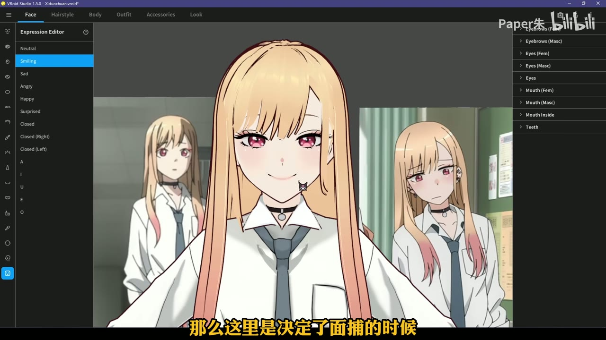
点进 Expression Editor。左侧是 Neutral、Smiling、Sad、Angry、Happy、Surprised、Closed、Closed (Right)、Closed (Left)，再往下是 A、I、U、E、O。这一帧 Smiling 亮着，嘴角是轻微笑，不是张大。右侧分组都还收着：Eyebrows (Masc)、Eyes (Fem)、Eyes (Masc)、Eyes、Mouth (Fem)、Mouth (Masc)、Mouth Inside、Teeth。口播说这里决定面捕，也用来看 MMD 里有哪些自带表情；具体数值要凭喜好，也可以去找动漫参考，这两句画面上没有对照图。
生气嘴只拉过半，开心不要拉满
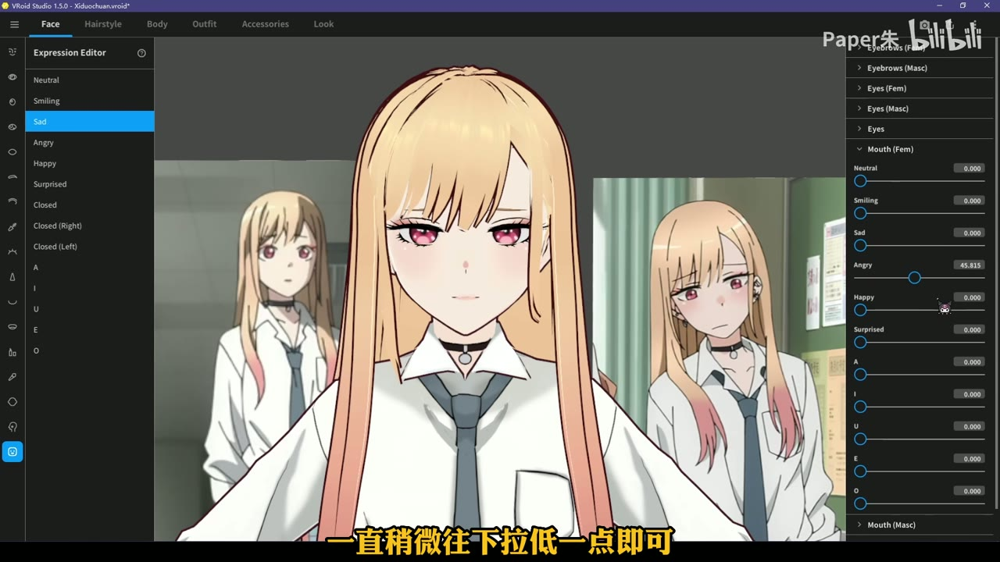
眉毛会穿进描边时，口播说把那一项的最大值往下收。这一帧左侧是 Sad，右侧打开的是 Mouth (Fem)。Angry 是 45.815，旋钮过了中线、没到头；Neutral、Smiling、Sad、Happy、Surprised 以及 A、I、U、E、O 都还是 0.000。脸仍然闭着嘴。
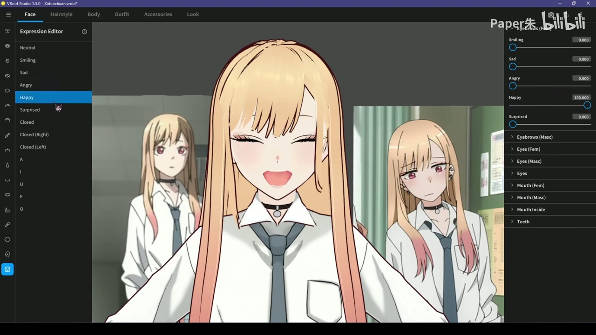
换成 Happy，眼睛闭上，嘴张到最大。这一帧能看见的是 Smiling、Sad、Angry、Surprised 都是 0.000，Happy 是 100.000。Mouth (Fem)、Mouth (Masc)、Mouth Inside、Teeth 都收着，所以这 100 不是 Mouth (Fem) 里的读数。口播接着说微笑时不要把这些值拉很大，以免穿模；每个区块里的滑杆就是脸上能控的 blendshape，这个词出现在稍后的字幕里。拉满的这一下是反例，不是要留的结果。
转到侧面看那根描边
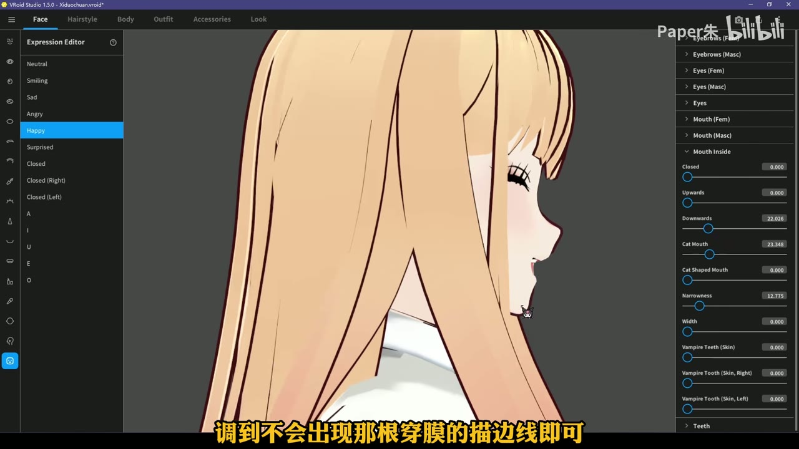
正面看不出嘴和脸的布线冲突时，把镜头转到侧面。口播说穿模就是嘴巴和脸的布线打架，把嘴部往下调，直到那根穿出的描边消失；嘴显得太大也同样往回收。这一帧 Happy 仍亮着，Mouth Inside 里 Downwards、Cat Mouth、Narrowness 的旋钮离开了最左，Closed、Upwards、Width 和几项 Vampire Tooth 还是 0.000。具体小数这一帧不抄。
闭眼刚好合上，口型对着发音
单眼拉到刚闭上
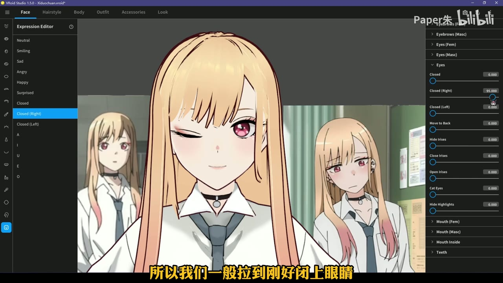
闭眼也会穿模。点 Closed (Right)，在 Eyes 里把 Closed (Right) 拉到 95.000，眼睛刚好合上，没有顶到 100。Closed、Closed (Left)、Move to Back、Hide Irises、Close Irises、Open Irises、Cat Eyes、Hide Highlights 都还是 0.000。口播说闭眼拉到刚好闭上即可。另一侧后来改选 Closed (Left)，同样只闭一只眼。
左右眼要一致，口型用预设再收
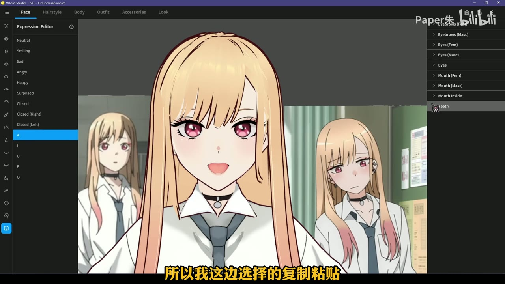
口播说左右眼的参数尽量保持一致，所以这边用复制粘贴。这一帧没有复制按钮，右侧分组也都收着，只能看到结果：A 被选中，两只眼睛大小一样，嘴微张。复制粘贴本身是口播。
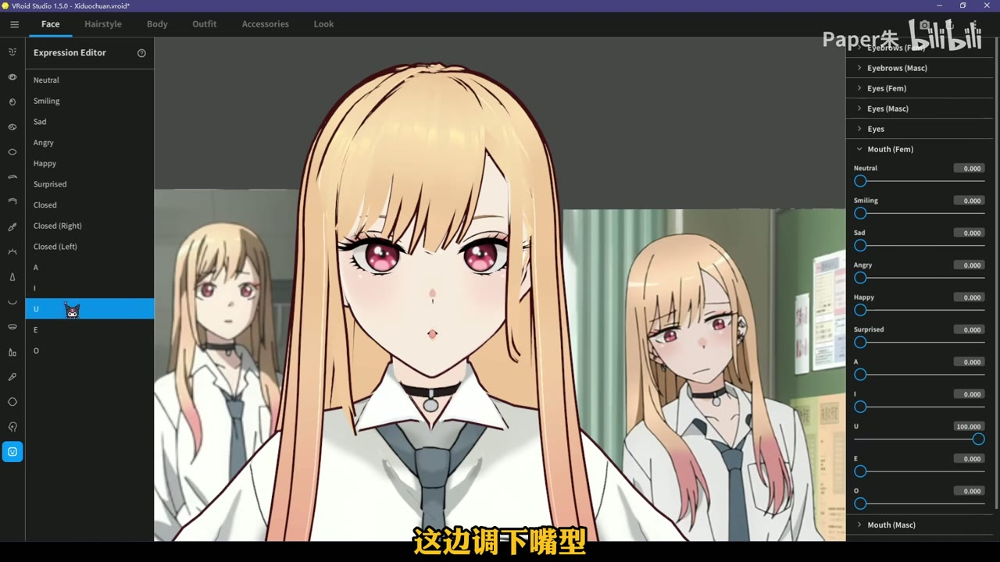
左侧 A、I、U、E、O 是口型。口播说大部分嘴型预设已经给好，做的时候对照自己发出这几个音的嘴型，再按审美收。这一帧停在 U，嘴收成小圆，U 的旋钮拉到最右。后面还切过 O，再点回 Neutral。口播说表情调整到这里大致结束。
皮肤上补一层手绘阴影
眼白先描边缘
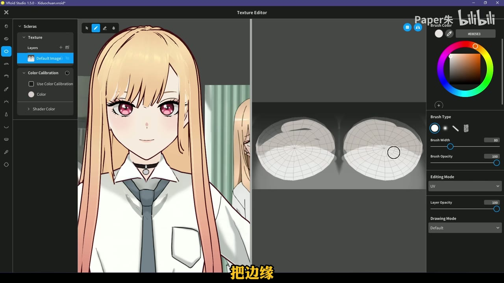
口播说最后做一点后处理，让眼睛和身上的阴影不那么平，这里可以加速看。先开眼白的贴图。右侧是两块圆形 UV，圆笔停在右眼边缘。口播要把边缘处理得更清楚。Brush Width 这一帧不抄。
脖子和脸的分界，再描到衣服
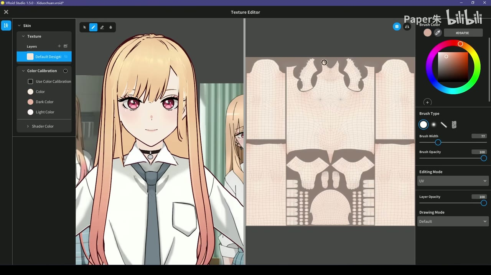
换到 Skin。Use Color Calibration 没勾，Color、Dark Color、Light Color 都在，Shader Color 还收着。右边是脸、眼和脖子摊开的 UV。口播说把眼睛的阴影分界线画清楚，再在脖子和脸的下方加一条边缘明显的阴影线。笔宽这一帧不抄。
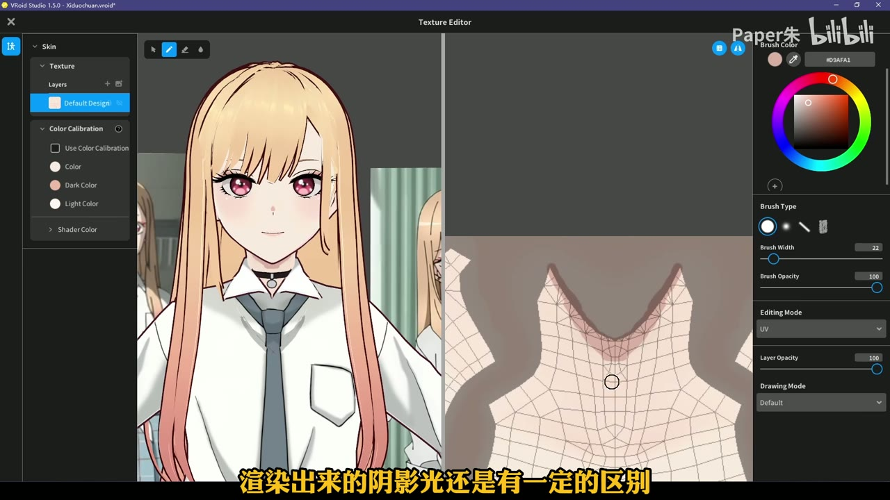
笔还在同一层上。这一帧 Brush Width 是 22，Brush Opacity 100，Layer Opacity 100，Editing Mode 是 UV，Drawing Mode 是 Default，圆笔那一档亮着。裙子 UV 的上沿已经有一条深色边。口播说这和渲染出来的阴影光还是有区别，是手绘补上去的。
膝盖补完就停
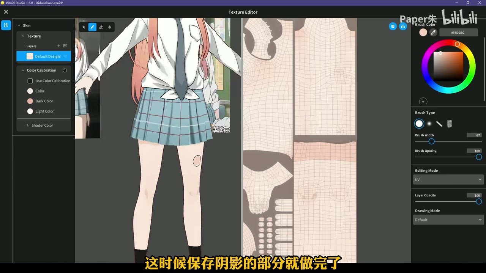
口播说膝盖也加一点边缘明显的阴影。这一帧裙子和腿的 UV 上能看到画上去的深色块，角色膝盖上有一块浅影。字幕说保存阴影的部分做完了；这一帧没有弹出保存框，保存是口播。
到摄影棚里看整个人
相机工具进 Photo Booth
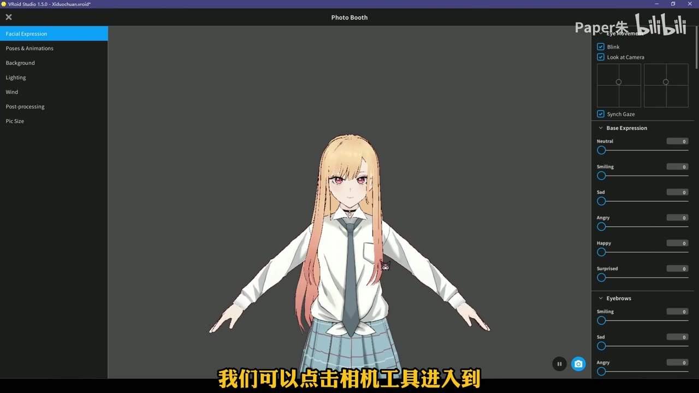
口播说模型差不多改完，点相机工具进渲染界面。画面已经是 Photo Booth，参考图去掉了，背景是灰的。左侧 Facial Expression 亮着。右侧 Eye Movement 里 Blink、Look at Camera 勾着，下面 Synch Gaze 也勾着。Base Expression 的 Neutral、Smiling、Sad、Angry、Happy、Surprised 都是 0，Eyebrows 同样是 0。右下角是暂停和相机按钮。
先把风停掉
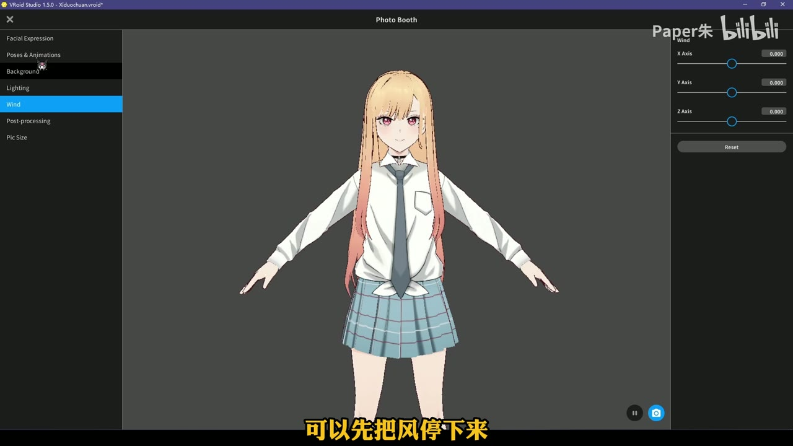
头发还在被风吹时，不好看动作。点 Wind，把 X Axis、Y Axis、Z Axis 都收到 0.000，也可以点下面的 Reset。这一帧三轴已经是 0.000，头发垂直。
用待机动作看穿模
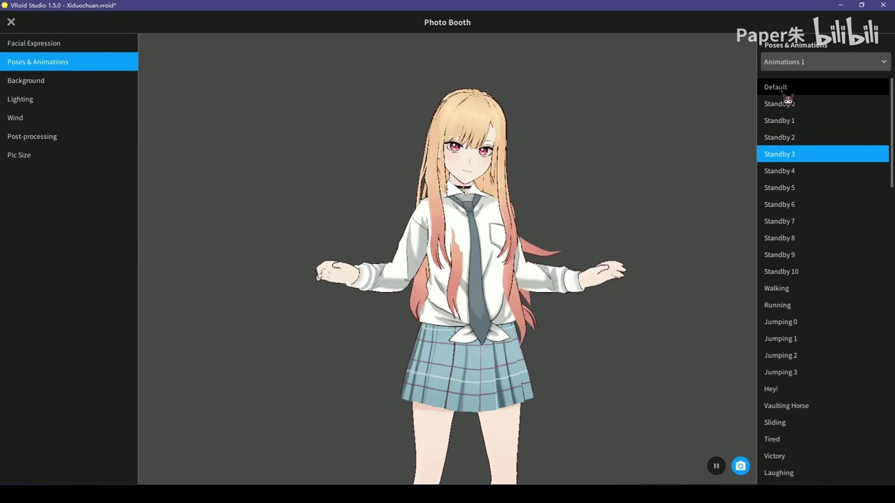
点 Poses & Animations。右侧是 Animations 1，从 Default、Standby 0 一直排到 Laughing。这一帧 Standby 3 亮着，双手抬到身前。口播说先摆默认的 pose，看动起来什么样、身上的物理要不要再处理。物理骨骼这一下没有单独的面板。
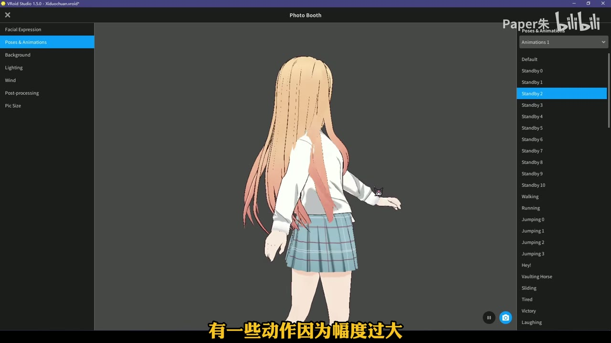
幅度大的动作会穿模。这一帧是背面，Standby 2 亮着，一只手伸开，长发和裙子分开。口播说幅度过大可能会穿模。如果头发还要做更多的骨编辑，口播说可以拉到外部软件；这一帧没有骨骼界面，也没有导出按钮。
观察整模时打开抗锯齿
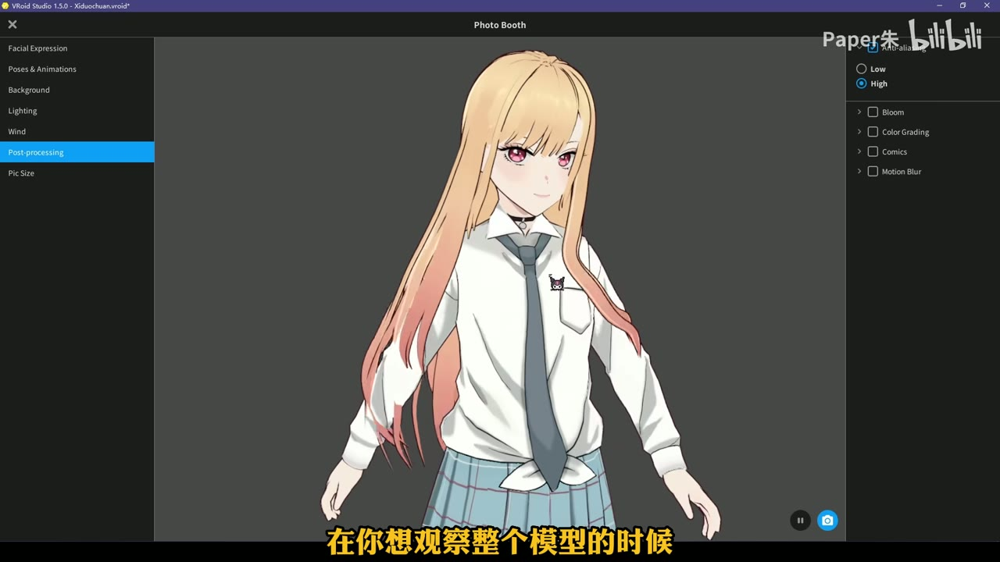
点 Post-processing。Antialiasing 选 High，Low 没选。Bloom、Color Grading、Comics、Motion Blur 都没勾。口播把这一项叫去锯齿，说想观察整个模型时把它打开。字幕这一帧还停在「在你想观察整个模型的时候」，下一句才说出打开。